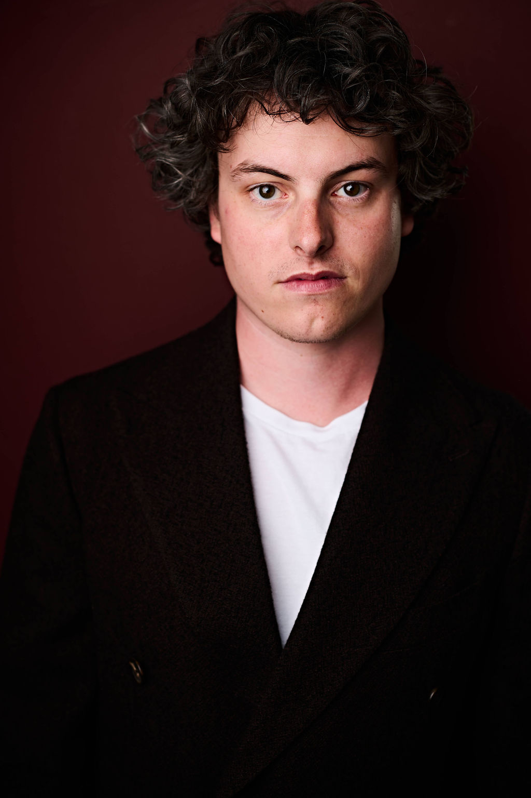
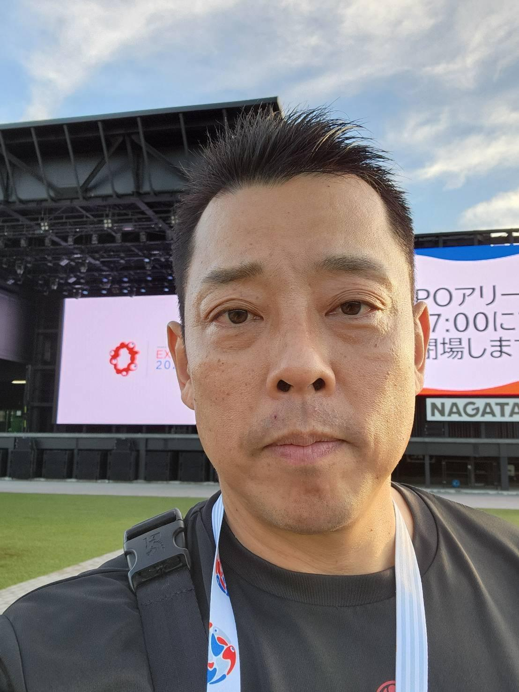

A small crew committed to our partners, to Japan's authors, and to the patience the work deserves.
Founder of Cloverway Inc. Over three decades as a harbor between Japanese publishers and audiences across the Americas. Former representative of Toei Animation for the Americas. Trusted partner to Shueisha, Kodansha, and Shogakukan.
Day-to-day publisher engagement and Japan operations. Bilingual and bicultural. Supports the Kadokawa relationship and serves as the primary interface between IP Bay and Japan's major publishers.

U.S. operations. Supports studio, streamer, and financier relationships on the American side of the crossing, helping connect Japanese stories with producers who can bring them to the screen with care.

Registered member of the Cool Japan Initiative. Direct ties to the Osaka Film Commission and prefectural government. Supports IP Bay's work with Japan's institutional partners with care and respect.